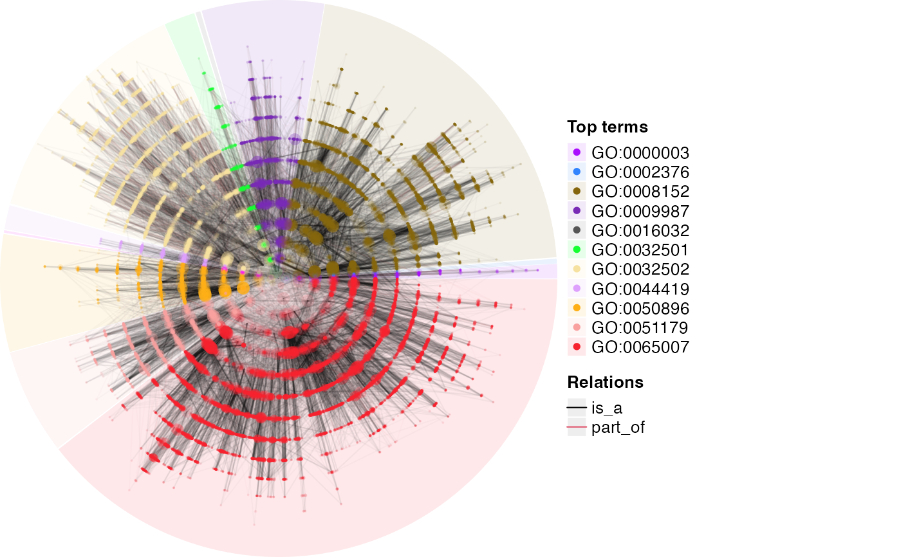

Visualize the DAG
dag_circular_viz(
dag,
highlight = NULL,
start = 0,
end = 360,
partition_by_level = 1,
partition_by_size = NULL,
node_col = NULL,
node_transparency = 0.4,
node_size = NULL,
edge_col = NULL,
edge_transparency = default_edge_transparency(dag),
legend_labels_from = NULL,
legend_labels_max_width = 50,
other_legends = list(),
use_raster = dag_n_terms(dag) > 10000,
newpage = TRUE,
verbose = simona_opt$verbose
)
dag_as_DOT(
dag,
node_param = default_node_param,
edge_param = default_edge_param
)
dag_graphviz(
dag,
node_param = default_node_param,
edge_param = default_edge_param,
...
)An ontology_Dag object.
A vector of terms to be highlighted on the DAG.
Start of the circle, measured in degree.
End of the circle, measured in degree.
If node_col is not set, users can cut the DAG into clusters with different node colors. The partitioning is applied by partition_by_level().
Similar as partition_by_level, but the partitioning is applied by partition_by_size().
Colors of nodes. If the value is a vector, the order should correspond to terms in dag_all_terms().
Transparency of nodes. The same format as node_col.
Size of nodes. The same format as node_col.
A named vector where names correspond to relation types.
A named vector where names correspond to relation types.
If partitioning is applied on the DAG, a legend is generated showing different top terms. By default, the legend labels are the term IDs. If there are additionally column stored in the meta data frame of the DAG object, the column name can be set here to replace the term IDs as legend labels.
Maximal width of legend labels measured by the number of characters per line. Labels are wrapped into multiple lines if the widths exceed it.
A list of legends generated by ComplexHeatmap::Legend().
Whether to first write the circular image into a temporary png file, then add to the plot as a raster object?
Whether call grid::grid.newpage() to create a new plot?
Whether to print messages.
A list of parameters. Each parameter has the same format. The value can be
a single scalar, a full length vector with the same order as in dag_all_terms(),
or a named vector that contains a subset of terms that need to be customized.
The full set of parameters can be found at https://graphviz.org/docs/nodes/.
A list of parameters. Each parameter has the same format. The value can be a single
scalar, or a named vector that contains a subset of terms that need to be customized.
The full set of parameters can be found at https://graphviz.org/docs/edges/.
If the parameter is set to a named vector, it can be named by relation types c("is_a" = ...),
or directly relations c("a -> b" = ...). Please see the vignette for details.
Pass to DiagrammeR::grViz().
dag_as_DOT() returns a vector of DOT code.
dag_circular_viz() uses a circular layout for visualizing large DAGs. dag_graphviz()
uses a hierarchical layout for visualizing small DAGs.
dag_as_DOT() generates the DOT code of the DAG.
dag_graphviz() visualizes the DAG with the DiagrammeR package.
http://magjac.com/graphviz-visual-editor/ is nice place to try the DOT code.
# \donttest{
dag = create_ontology_DAG_from_GO_db()
#> relations: is_a, part_of
dag_circular_viz(dag)
#> converting DAG to a tree...
#>
#> going through 1000 / 27942 nodes ...
#>
#> going through 2000 / 27942 nodes ...
#>
#> going through 3000 / 27942 nodes ...
#>
#> going through 4000 / 27942 nodes ...
#>
#> going through 5000 / 27942 nodes ...
#>
#> going through 6000 / 27942 nodes ...
#>
#> going through 7000 / 27942 nodes ...
#>
#> going through 8000 / 27942 nodes ...
#>
#> going through 9000 / 27942 nodes ...
#>
#> going through 10000 / 27942 nodes ...
#>
#> going through 11000 / 27942 nodes ...
#>
#> going through 12000 / 27942 nodes ...
#>
#> going through 13000 / 27942 nodes ...
#>
#> going through 14000 / 27942 nodes ...
#>
#> going through 15000 / 27942 nodes ...
#>
#> going through 16000 / 27942 nodes ...
#>
#> going through 17000 / 27942 nodes ...
#>
#> going through 18000 / 27942 nodes ...
#>
#> going through 19000 / 27942 nodes ...
#>
#> going through 20000 / 27942 nodes ...
#>
#> going through 21000 / 27942 nodes ...
#>
#> going through 22000 / 27942 nodes ...
#>
#> going through 23000 / 27942 nodes ...
#>
#> going through 24000 / 27942 nodes ...
#>
#> going through 25000 / 27942 nodes ...
#>
#> going through 26000 / 27942 nodes ...
#>
#> going through 27000 / 27942 nodes ...
#>
#> going through 27942 / 27942 nodes ... Done.
#> calculating term positions on the DAG...
#>
#> going through 1000 / 27942 nodes ...
#>
#> going through 2000 / 27942 nodes ...
#>
#> going through 3000 / 27942 nodes ...
#>
#> going through 4000 / 27942 nodes ...
#>
#> going through 5000 / 27942 nodes ...
#>
#> going through 6000 / 27942 nodes ...
#>
#> going through 7000 / 27942 nodes ...
#>
#> going through 8000 / 27942 nodes ...
#>
#> going through 9000 / 27942 nodes ...
#>
#> going through 10000 / 27942 nodes ...
#>
#> going through 11000 / 27942 nodes ...
#>
#> going through 12000 / 27942 nodes ...
#>
#> going through 13000 / 27942 nodes ...
#>
#> going through 14000 / 27942 nodes ...
#>
#> going through 15000 / 27942 nodes ...
#>
#> going through 16000 / 27942 nodes ...
#>
#> going through 17000 / 27942 nodes ...
#>
#> going through 18000 / 27942 nodes ...
#>
#> going through 19000 / 27942 nodes ...
#>
#> going through 20000 / 27942 nodes ...
#>
#> going through 21000 / 27942 nodes ...
#>
#> going through 22000 / 27942 nodes ...
#>
#> going through 23000 / 27942 nodes ...
#>
#> going through 24000 / 27942 nodes ...
#>
#> going through 25000 / 27942 nodes ...
#>
#> going through 26000 / 27942 nodes ...
#>
#> going through 27000 / 27942 nodes ...
#>
#> going through 27942 / 27942 nodes ... Done.
#> making plot...
#> saving the circular plot into a temporary png file...
#> adding links...
#> adding terms...
#> Best device size: 9.49 x 6.67 inches.

# }
1
#> [1] 1
if(interactive()) {
dag = create_ontology_DAG_from_GO_db()
dag_graphviz(dag[, "GO:0010228"])
dag_graphviz(dag[, "GO:0010228"],
edge_param = list(color = c("is_a" = "purple", "part_of" = "darkgreen"),
style = c("is_a" = "solid", "part_of" = "dashed")),
width = 800, height = 800)
# the DOT code for graphviz
dag_as_DOT(dag[, "GO:0010228"])
}